Габрішин - один з найяскравіших представників наївного живопису Вінницького регіону. Лауреат почесних дипломів та свідоцтв за 10 років творчості. Він був учасником національних та міжнародних виставок. Головним досягненням художника є створення власної мови. Його творча мова - це симбіоз народної творчості та індивідуалізованої духовності, філософської інтерпретації історії та семантики з елементами певних реалій історичного минулого. Унікальний простір повний предметів, люди завжди ледь помітні, але абсолютно необхідні. У своїй несподіваній грі з кольором він прагне до універсального розуміння світу. Унікальна творчість цього чудового живописця потребує майбутніх досліджень
Народнта творчість та етнографія 1995р №1
Твори Івана Габришина стали відкриттям для вінничан років шість тому. Вони викликали неабиякий інтерес у глядачів та фахівців. Вінницькі мистецькі кола відчули в картинах почерк великого майстра.
До того ніхто не знав Івана Габришина, як художника, та й сам митець намагався тримати свою творчість подалі від людського ока. Іван Вікторович, людина скромна, вимоглива до себе, бачив, то в творах чогось бракує, а саме чого не знав. Не міг зрозуміти своєрідність власної творчості, загадкових законів примітиву. Лише жага творення притягувала до полотна.
Хто знає, скільки так тривало б, якби не випадок. Один чоловік порадив відвезти роботи на виставку. Відтоді для художника настало інше життя. З’явилися нові люди, обіцяли золоті гори, аби малював картини лише для них, а вони продаватимуть, скажімо, за кордон. Він погодився, бо що поробиш, КОЛИ його твори виявилися у Вінниці нікому не потрібними.
Одного разу Іван Габришин заніс в художній музей кілька картин, але їх там не прийняли. Потім написав лист у Державний музей Т. Г. Шевченка, пропонуючи закупити роботу «Тарасові шляхи» за досить-таки невисоку ціну. Але відповіді з Києва так і не отримав. На цьому і закінчилося вінницьке і київське визнання.
Художник був змушений іти на гранітний кар’єр в с. Стрижавку, де раніше працював інженером. Трудився кілька років, доки до нього не приїхали «купці», оті незнайомі люди, які закупили всі, навіть «браковані» роботи.
Натиснить на картинку щоб звеличити розмір
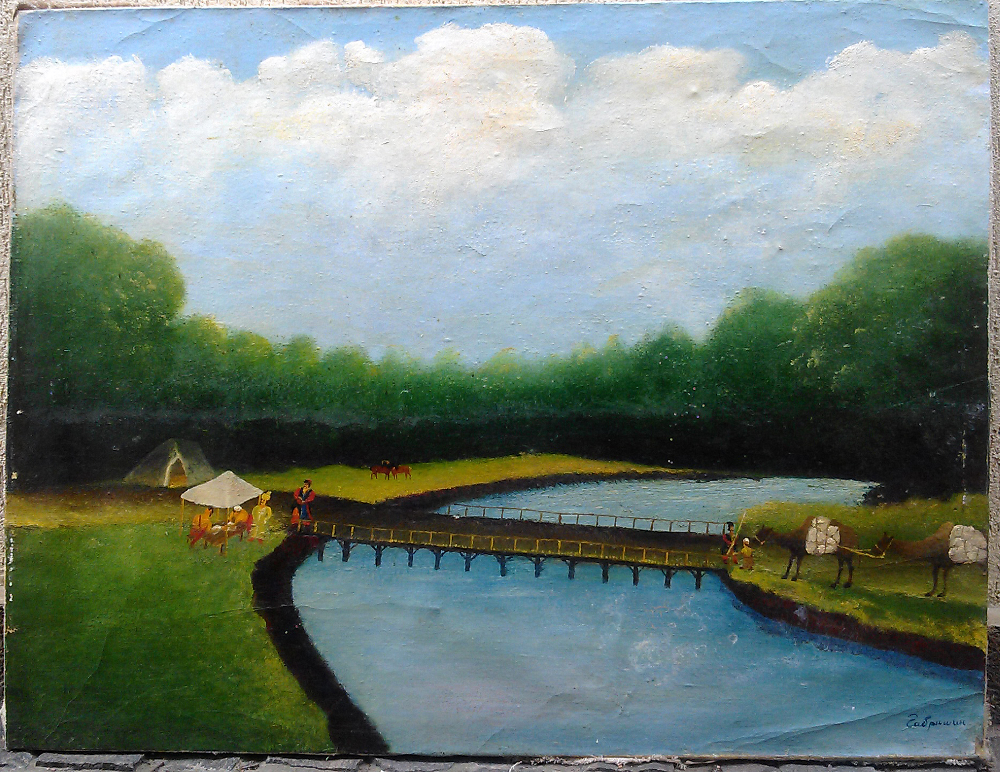
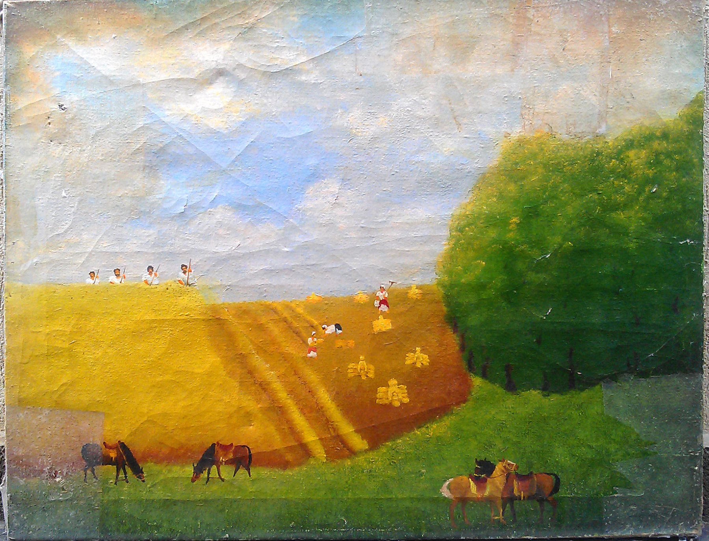
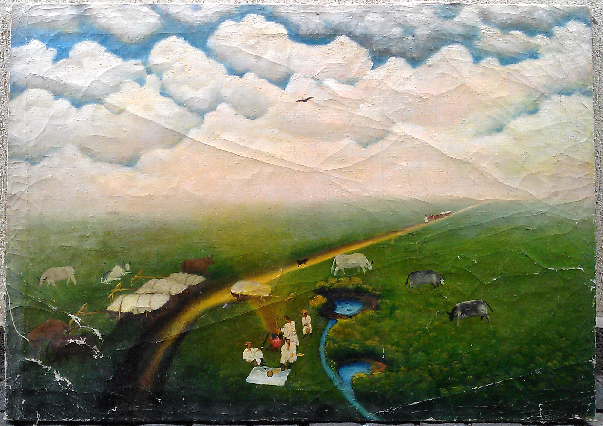
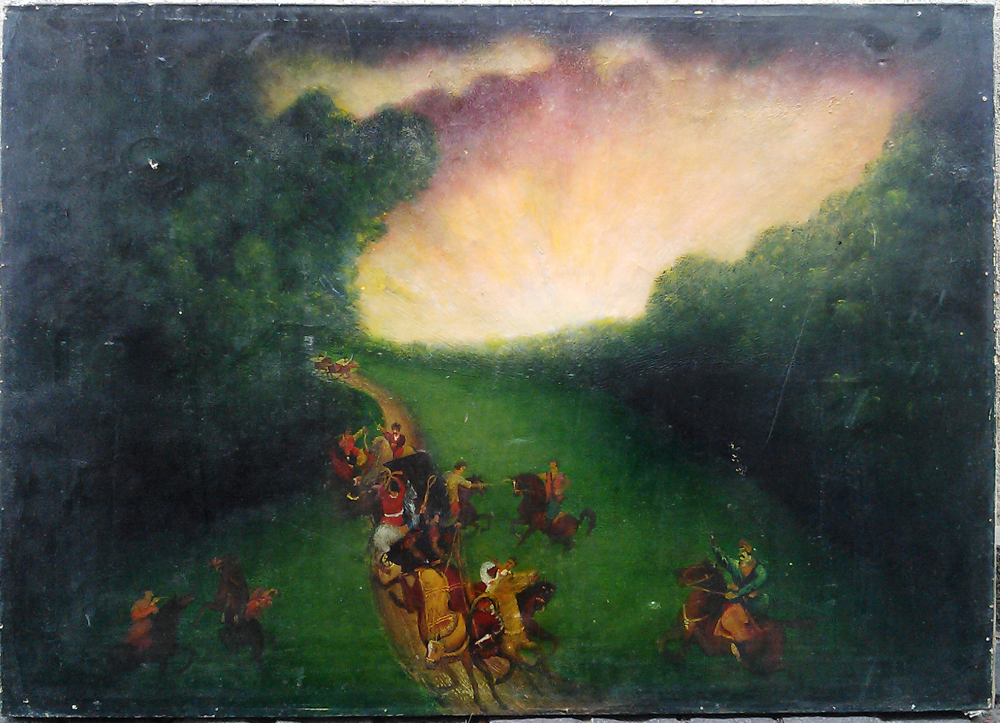
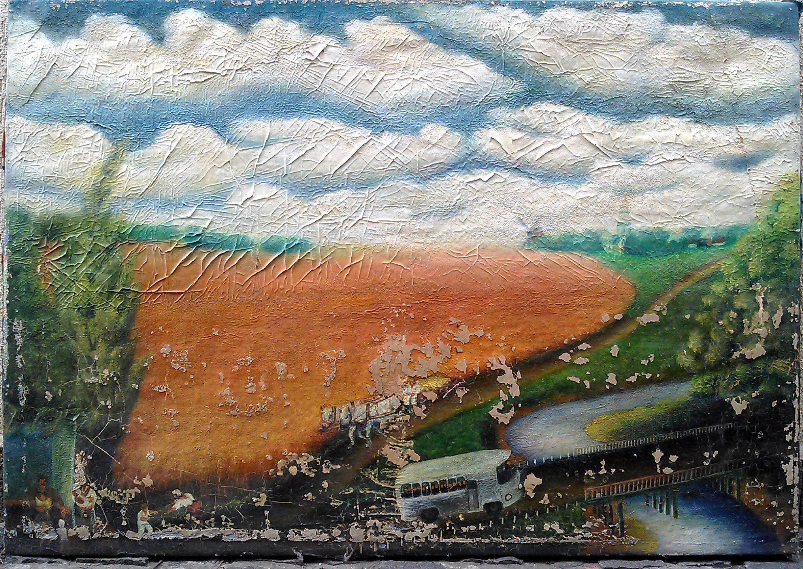
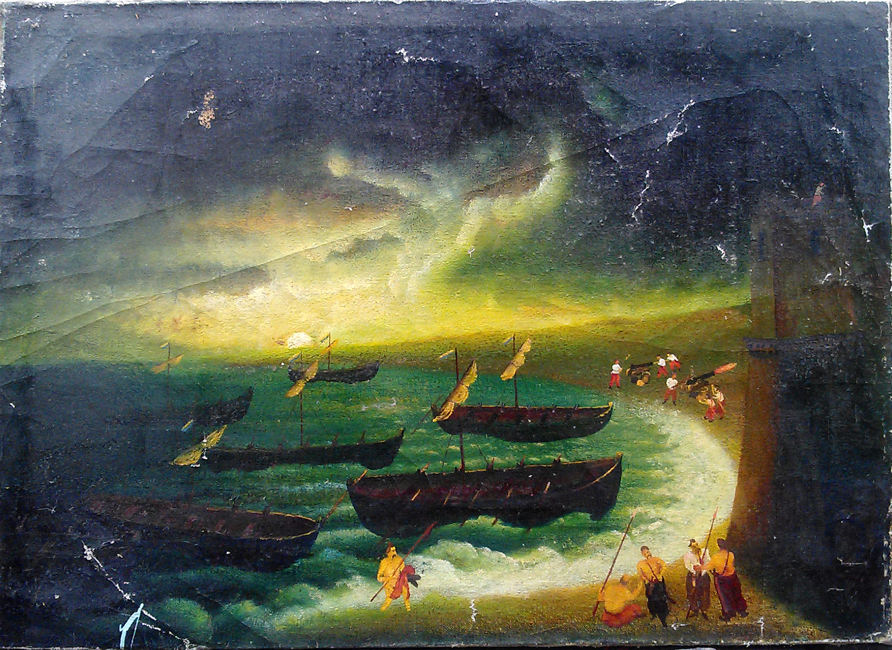
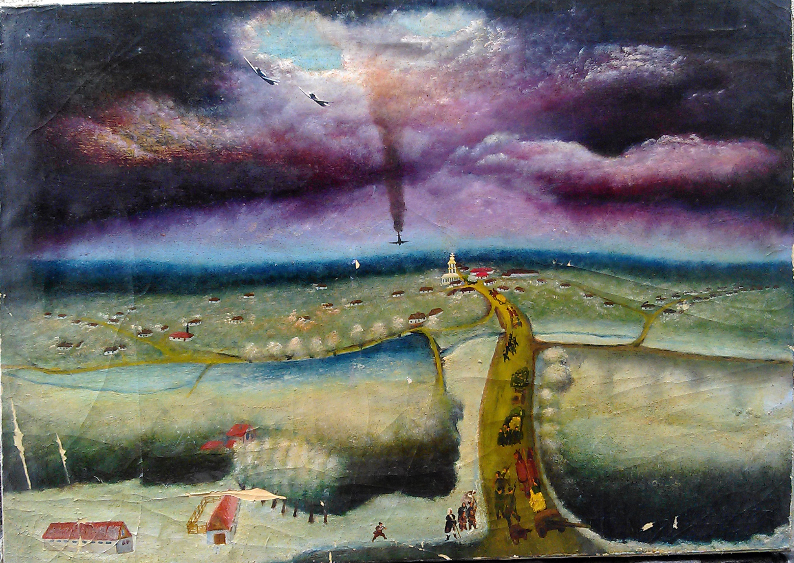
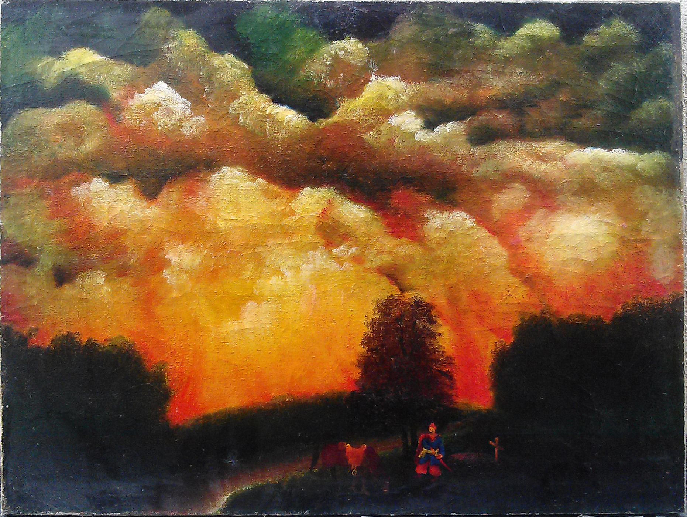
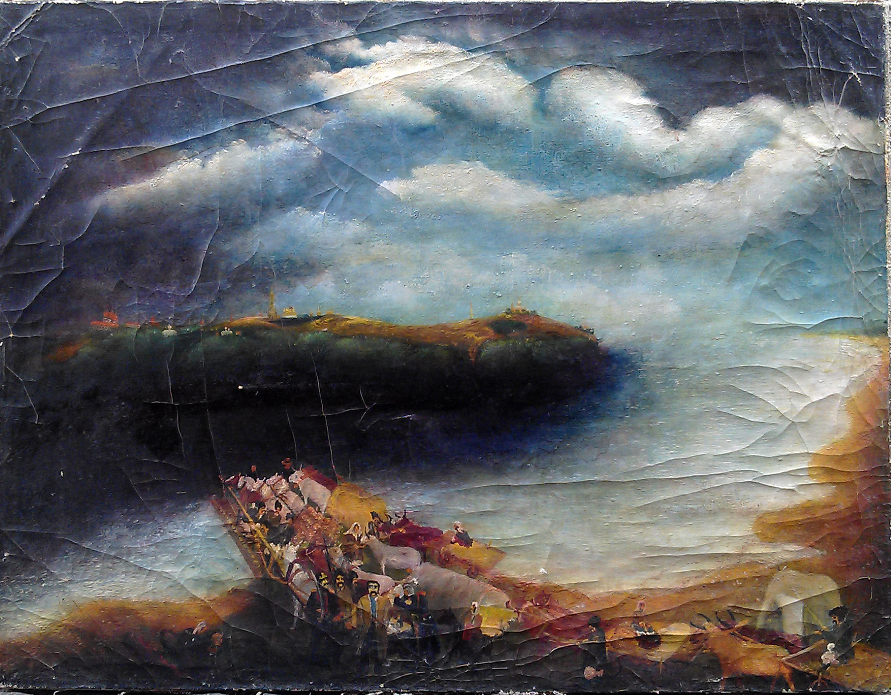
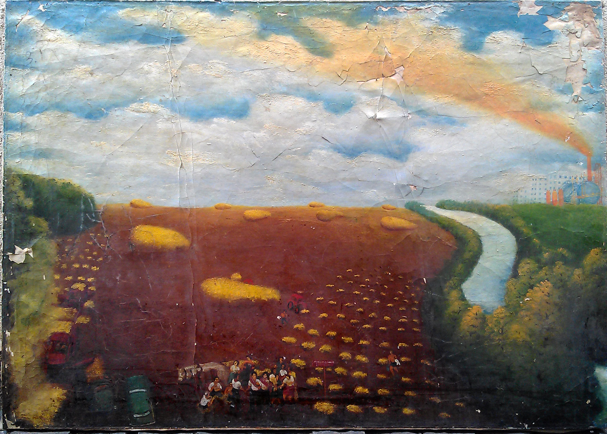
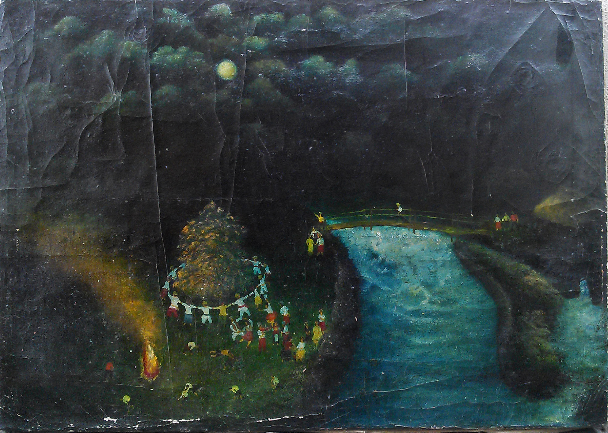
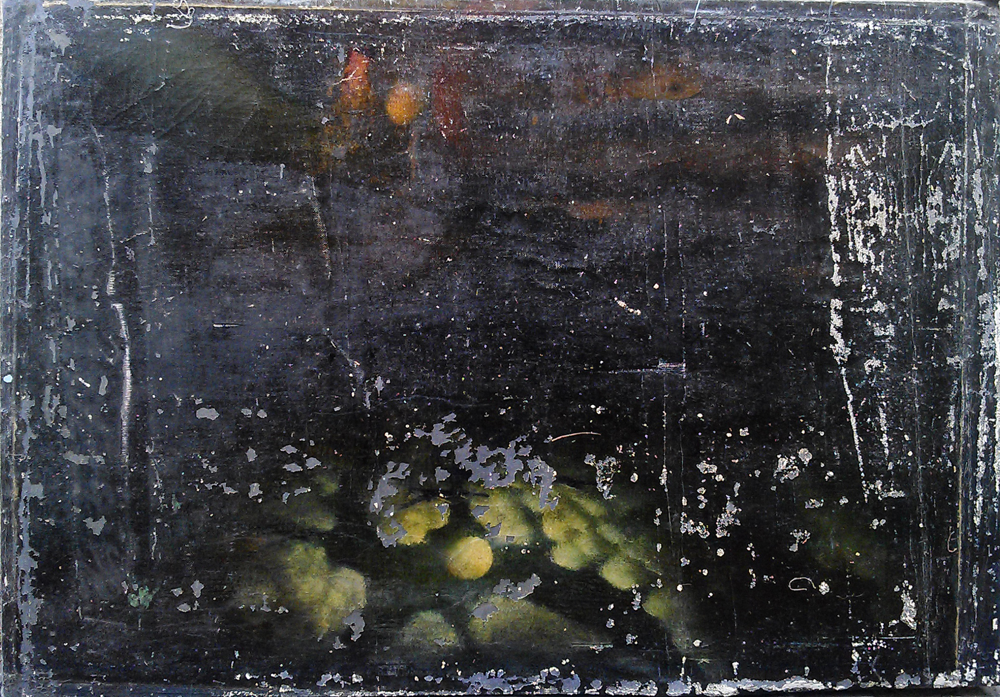
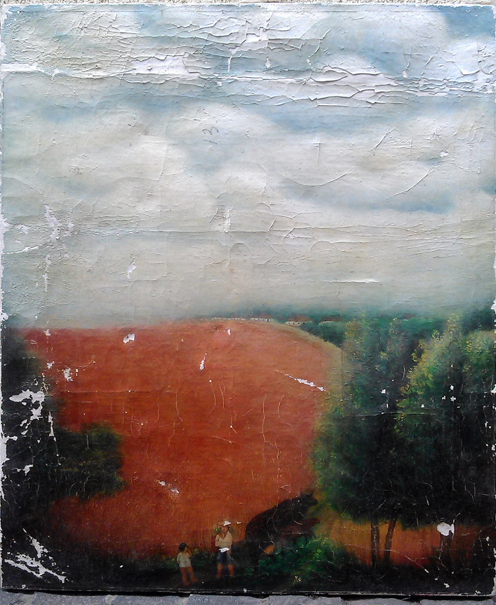
Іван Вікторович примруженим поглядом довго дивиться на розпочату картину, ніби намагається прочитати долю кожного із зображених героїв. Чути важке зітхання. Воно видалося мені таким болючим і щемливим. Можна зрозуміти художника — попереду важка творча праця, а може й смуток за пройденими літами, чи тим, чого ще не встиг написати в своєму житті.
Болем зворушує картина сільського життя, опаленого війною, в творі «Повоєнна весна». Події відбуваються вночі при місяці. Жінки орють волами землю. В небі летять ворожі літаки. Кілька діточок з торбинками жита на худих плечиках засівають землю. Нічна в’язка земля, немов не відпускає від себе цих маленьких дітей, постаті яких поринули в її темне тло.
Таку картину міг написати художник, який відчув на собі важке життя дітей, любить їх, чуйний до їх радощів і прикрощів. Іван Габришин майстерно зображує землю, щедро вводить у живопис темно- сині, коричневі фарби. Особливе місце майже в усіх творах займає небо, яке ділить полотно навпіл. Навіть у зображенні неба виявляється його мистецька самобутність.
Досить оригінальна композиційна будова твору «Тарасові шляхи»: дві дороги, перетинаючись, утворюють хрест. Той важкий хрест, який впродовж життя ніс славний син України. Кожному своя дорога, філософствує митець. По одній поїхав пан, іншою крокує селянин з конякою. Захід сонця надзвичайно живописний, багатий своєю кольоровою гамою. Природа велична і одухотворена, контраст теплих тонів доріг і свинцово-холодних хмар, що кидають на степ темні пасма тіней, неначе доповнює вечірню розмову Шевченка з селянами.
Іван Габришин часто буває у с. Строїнцях, де він народився, де минуло його дитинство. Митець любить село, людей. Широкопанорамне полотно «Золоте весілля» йому підказало саме життя. В центрі біля відчинених воріт сивий дідусь з бабусею — герої урочистостей, які прожили в злагоді п’ятдесят років. Художник зумів передати на полотні настрій двох старих людей. На подвір’ї літні люди, збуджені від радості, святкують ювілей своїх ровесників. Лише осторонь одинока бабуся в затишку саду, щаслива, що дожила до цього дня. В її образі прочитується мудрість і філософія сільського життя. На хаті — лелеки, як символи добра і злагоди. Полотно відсвічує золотаво-жовтою гамою кольорів, і все видається казковим, святковим, незвичним.
Іван Вікторович малює свої полотна довго. Досконало вивчає історію, ландшафт, одяг, звичаї. Художник намагається якомога ширше показати сцени життя, тому вдається до панорамності, поглядом з висоти пташиного польоту охоплює широту невгамовного і гамірливого життя.
Невеличкі фігурки людей, тварин, а їх в роботах чимало, зображені незграбно, невиписані, але саме це викликає захоплення у справжніх глядачів й поцінювачів. У тому й проявляється феномен примітивістського мистецтва, що своєю щирістю і безпосередністю запалює любителів мистецтва. А найбільше вражає зворушлива безпосередність світобачення Івана Габришина.